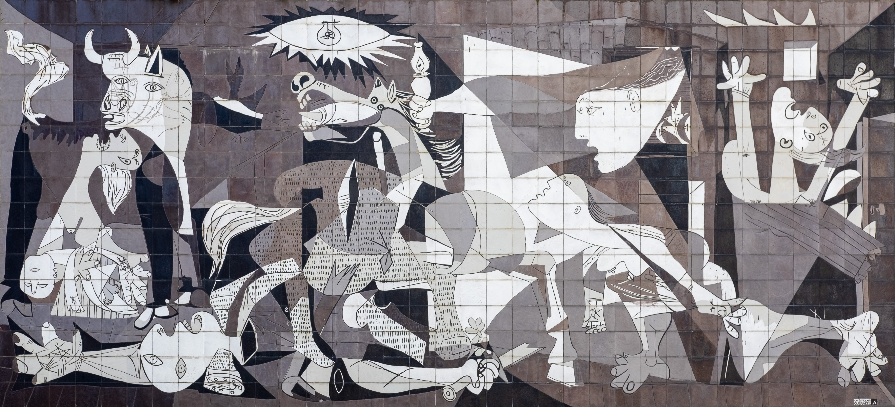
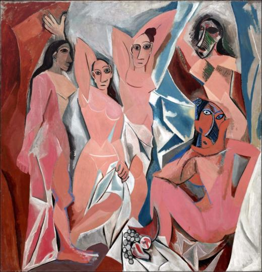

Pablo Picasso (1881–1973) spanyol származású festő, szobrász, grafikus és az egyik legismertebb 20. századi művész volt. A modern művészet egyik legnagyobb hatású alakja, legismertebb alkotásai közé tartozik a Guernica és a Les Demoiselles d'Avignon. Rövid életrajz: Született: 1881. október 25-én, Málagában, Spanyolországban. Korai tehetség: Már gyermekkorában megmutatkozott művészi tehetsége, apja is festő volt, aki támogatta fiát. Tanulmányai: Barcelonában és Madridban tanult művészetet. Párizsba költözés: A 20. század elején Párizsba költözött, ahol a művészeti élet központjába került. Korszakai: Kék korszak (1901–1904): szomorú hangulatú, kék árnyalatú képek. Rózsaszín korszak (1904–1906): melegebb színek, cirkuszi témák. Kubizmus (1907-től): Georges Braque-kal együtt fejlesztette ki; a tárgyakat geometrikus formákra bontotta. Guernica (1937): a spanyol polgárháború borzalmaira reagáló, híres háborúellenes műve. Későbbi évek: Élete végéig aktívan alkotott, számos stílust és technikát kipróbált. Meghalt: 1973. április 8-án, Mougins-ban, Franciaországban. Öröksége: Picasso több mint 20 000 művet hagyott hátra, hatása óriási a modern művészet fejlődésére. Nemcsak festészetével, hanem kísérletező szellemével is inspirálta a későbbi generációkat.
Bővebben: Wikipedia - Picasso
 